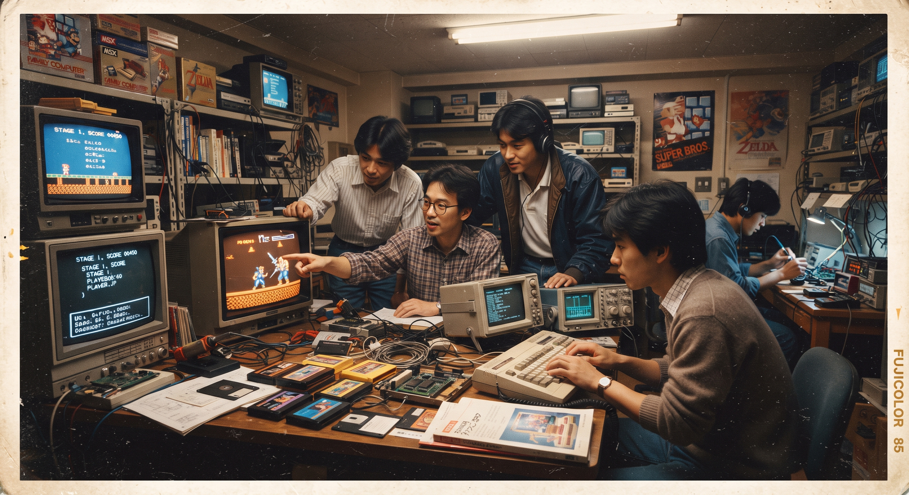

GamesArchive
GamesArchiveQuem nós somos?
A GamesArchive existe com o propósito de registrar e compartilhar a história dos videogames. Essa iniciativa nasceu da paixão por preservar e divulgar a rica herança dos jogos eletrônicos. A área é tão vasta que compilar tudo o que podemos é um desafio que decidimos encarar para ajudar pessoas que buscam informações sobre os videogames.
Fundada em 2026, buscamos manter todas as informações atualizadas e precisas para nossos visitantes. Nossa meta é também evoluir constantemente para oferecer a melhor experiência possível.

Anos 70 e 80
Os videogames chegaram às casas em 1972 com o Magnavox Odyssey, e o fliperama Pong, da Atari, popularizou o hobby. Em 1977, o Atari 2600 levou os jogos em cartucho para as salas de estar. Em 1983, o excesso de lançamentos de baixa qualidade provocou uma crise na indústria norte-americana, e o Nintendo Entertainment System, que chegou aos EUA em 1985 junto de Super Mario Bros., ajudou a reerguer o mercado.
Anos 90
A década foi marcada pela disputa entre Nintendo e Sega, com Super Nintendo e Mega Drive (Genesis), e por personagens como Mario e Sonic. Em 1994 a Sony estreou no mercado com o PlayStation, que popularizou o CD e os gráficos em 3D. Em 1996, Super Mario 64 mostrou como se movimentar num mundo tridimensional.
Anos 2000 até hoje
O PlayStation 2 (2000) se tornou um dos consoles mais vendidos da história, e a Microsoft entrou na disputa com o Xbox (2001). Veio a jogabilidade online, os controles por movimento do Wii e os jogos de celular, que ampliaram o público. Hoje, consoles como PlayStation 5 e Xbox Series X convivem com o Nintendo Switch, os jogos independentes e os campeonatos de e-sports.